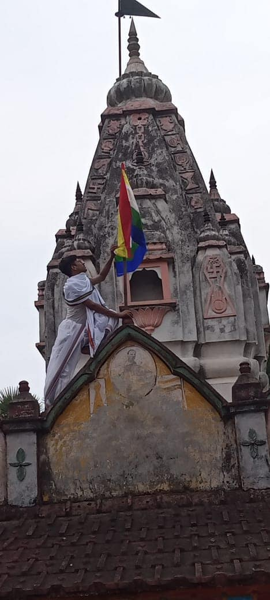
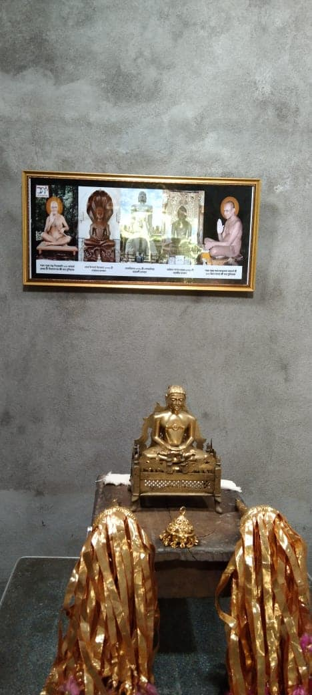
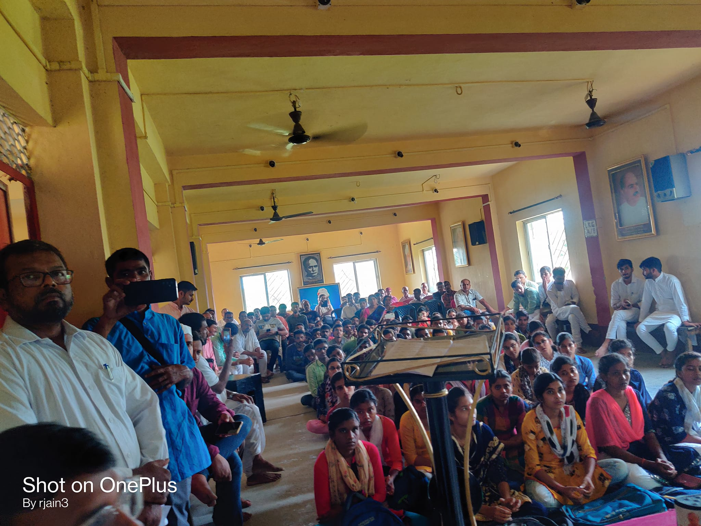
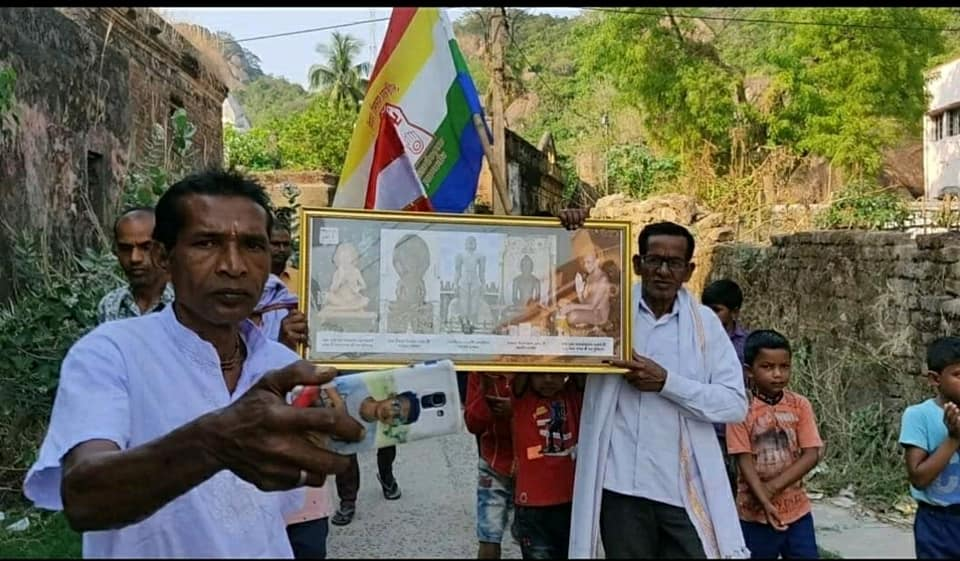
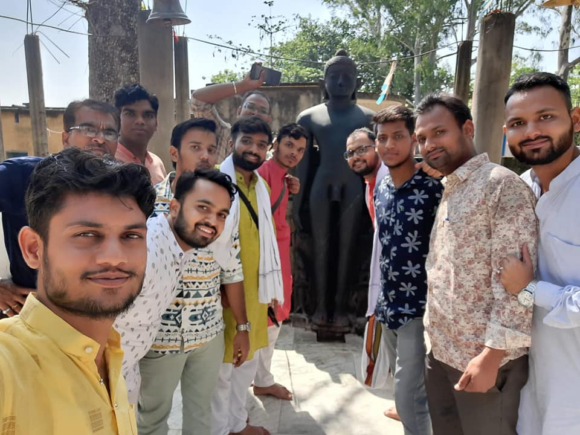

सराक उत्थान (Welfare Enhancement)
सराक 'अपभ्रंश ऑफ़ श्रावक' : The term सराक originates as a phonetic corruption (Apabhraṇśa) of the Sanskrit word Śrāvaka (meaning a Jain layman or listener). The Saraks represent an ancient Jain ethnoreligious community that has proudly retained profound Jain practices, such as strict vegetarianism, since antiquity.
The Sarak Diaspora & Culture
Ancient texts and archaeological records, including accounts from the Kalpa Sūtra, suggest that the Tirthankara Mahavira himself visited this community's native regions (historically known as Vajjabhumi). Legends and scholarship even note that the renowned Jain scholar Bhadrabahu may have belonged to the Sarak lineage.
Geographic Distribution
Total global population estimated between 34,000 to 50,000 individuals, concentrated across eastern regions:
- West Bengal: 25,000–35,000 (Purulia, Bankura, and Bardhaman districts)
- Jharkhand: 5,000–10,000 (Ranchi, Dumka, Giridih, and Singhbhum regions)
- Odisha: 2,000–5,000
- Other areas: Bihar, Assam, and parts of Bangladesh
Linguistic Diversity
Despite their shared ancestry, geographical diffusion has led the Saraks to adopt local regional tongues while maintaining their spiritual identity. Sarak families speak:
- Bengali (primarily in Bengal & Jharkhand)
- Singhbhumi Odia
- Hindi, Assamese, and Bihari languages
Contribution of Jain Sangh Pune in सराक उत्थान
जैन धर्म प्रभावना
For several years, the dedicated volunteers of Jain Sangh Pune have been actively working to promote Jain values and strengthen cultural and spiritual awareness in remote Jain Sarak regions. With the support of more than 125 committed volunteers, Shravak Sanskar Shivir have been successfully organized in over 50 villages, helping preserve and spread the principles, traditions, and teachings of Jain Dharma.
सराक उत्थान प्रमुख कार्य एवं उपलब्धियां | Key Metrics





प्रतिभा सम्मान 2023
In 2023, Jain Sangh Pune organized the prestigious 'प्रतिभा सम्मान' event to honor and celebrate the remarkable achievements of individuals from the Sarak community. This event not only recognized outstanding contributions in various fields but also served as a platform to inspire and motivate future generations of Saraks to continue striving for excellence while upholding their rich cultural heritage.



घर्म प्रभावना एवं जागरूकता जुलूस
जैन संघ पुणे प्रति वर्ष पर्युषण पर्व में 10 दिन इन सराक क्षेत्रों में संस्कार शिविर का आयोजन करता है| पर्व में अनंत चतुर्दशी के दिन जैन धर्म प्रभावना एवं जागरूकता जुलुस रैली निकाली जाती है, जिसमें बच्चे, बड़े और बूढ़े सभी बहुत हर्ष और उत्साह के साथ हिस्सा लेते है




तीर्थ दर्शन एवं संरक्षण
सराक क्षेत्रों के आस पास कई प्राचीन जैन मंदिर एवं प्रतिमाएं प्राप्त होती रहती है| जैन संघ पुणे के कार्यकर्त्ता मंदिर और प्रतिमाओं के संरक्षण के लिए प्रयासरत है |


"इन सभी सेवा कार्यों के माध्यम से संगठन निरंतर मानवता, सहयोग एवं सामाजिक उत्थान के मूल्यों को आगे बढ़ाने हेतु समर्पित है।"